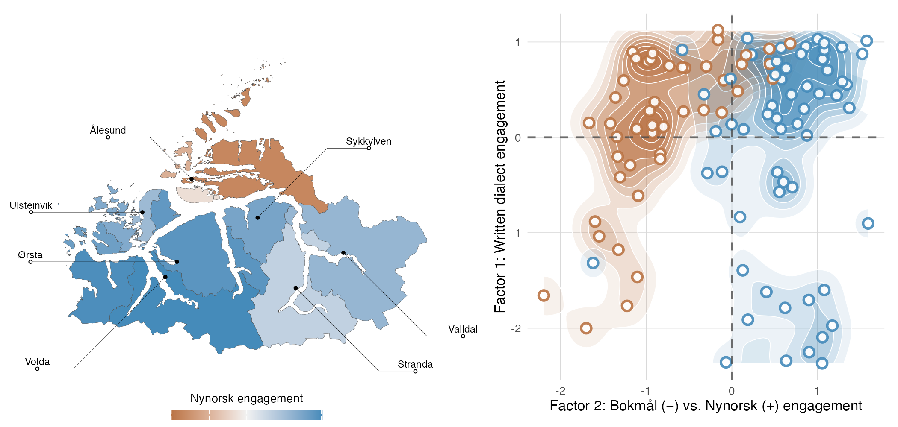
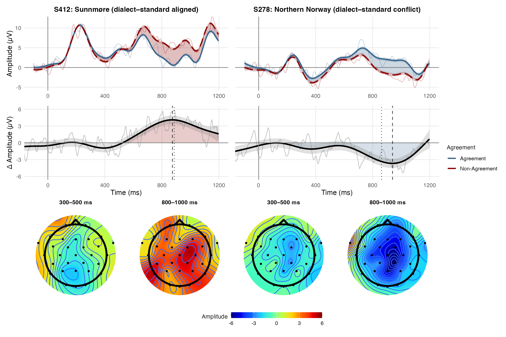
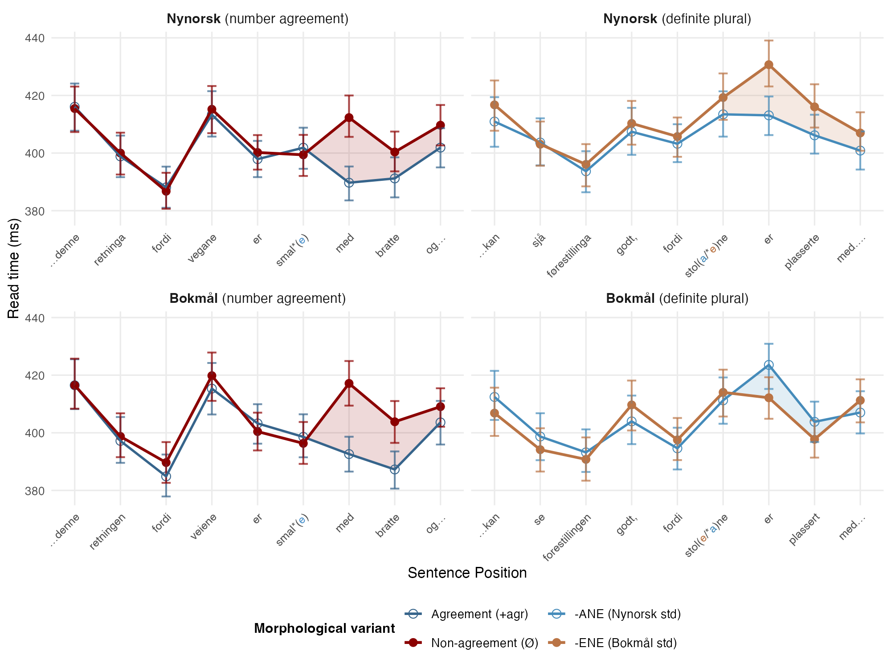

MInDReading
Multilectal Individual Differences in Reading — NFR FRIPRO (2026–2030)
MInDReading (Multilectal Individual Differences in Reading: Neurocognitive and Behavioral Effects of Dialect Exposure on Literacy Development) is a four-year research project funded by the Research Council of Norway (PI: Jade Sandstedt; NFR FRIPRO, 2026–2030, 9,957,000 NOK), based at Volda University College in collaboration with UiT — The Arctic University of Norway and the University of Oslo.
Exposure to linguistic variation is a basic fact of life. We move constantly across languages, dialects, registers, and modalities, and the variation we encounter shifts as we age and as our languages and communities change over time. MInDReading asks what such exposure to narrow, within-language grammatical (micro)variation does to the way we process language, and what grammatical variation can in turn reveal about the architecture of language: how linguistic knowledge is represented and deployed in real time.
Background: How does dialectal variation shape reading?
Norway is a natural laboratory for studying how exposure to variation shapes language processing. It has no spoken standard, its dialects carry high prestige and are used across all social settings, and bidialectalism is common. Moreover, alongside a regional spoken dialect, readers also learn two official written standards, Nynorsk and Bokmål, which feature widespread fine-grained differences in lexicon, syntax, morphology, and graphophonology.
One of the flagship studies behind MInDReading (Sandstedt et al., 2025) is a large EEG experiment that focused on how exposure to dialectal variation affects real-time sentence processing during reading. Readers saw Bokmål sentences containing predicate number-agreement violations (e.g. eplene var brun-e / *brun “the apples were brown-PL / -Ø”). The agreeing form brun-e is correct in both Nynorsk and Bokmål written standards, while the bare, unmarked (non-agreeing) stem *brun is incorrect but acceptable in many dialects. The readers came from two dialect backgrounds that differ in precisely this feature: agreement in Sunnmøre (n = 73; standard-aligned brun-e) versus non-agreement in Northern Norway (n = 83; standard-misaligned brun). Sunnmøre participants whose dialect marks the agreement show a robust P600 to the violation, but Northern Norwegian participants, whose dialect lacks agreement, show a strikingly attenuated response, reflecting an influence of their spoken dialect on how they process the written standard, reducing their sensitivity to the violation.
Grand-average ERP waveforms (left) shown alongside the matching scalp-topography sequence for each dialect group; the map situates the two regions and the predicate-agreement landscape across Norway.
These results reveal how exposure to narrow, within-language differences, here a single agreement suffix that the spoken dialect either marks or omits, can have outsized effects on how language is processed, even among L1 language users reading in their preferred written standard.
Mapping multilectal exposure and engagement (WP1)
The group contrast above compares two regions, but it averages over readers who differ widely in how much they use and are exposed to their dialect, Nynorsk, and Bokmål. To trace how that experience shapes language processing at the individual level, the first goal of MInDReading is to develop the Norwegian Multilectal Questionnaire (NorMQ). This is a validated, fit-for-purpose tool for quantifying how much each speaker engages with their local dialect and with the Nynorsk and Bokmål written standards. NorMQ will be built as a legacy resource, freely available beyond the project for educators, researchers, and policymakers.
A pilot version of NorMQ, run alongside the self-paced reading study described below (Sandstedt, Tanigawa & Eiksund, under review), illustrates how NorMQ can help capture both geographic and individual variation in Norwegian multilectal engagement.

Neural signatures of multilectalism (WP2)
With each reader’s multilectal experience quantified, WP2 asks how the neurophysiological effects seen in the group comparisons above relate to those individual differences in multilectal experience, using NorMQ engagement measures as predictors of each reader’s neural processing. Answering this requires resolving the EEG signal at the level of the individual participant. To that end, MInDReading develops subject-level methods based on Generalized Additive Mixed Models (GAMMs) (Sandstedt et al., 2026), which fit the non-linear time-course of individual participants’ neural responses and derive response magnitudes and latencies from the model-predicted values. These methods better preserve the full morphology and timing of each participant’s response, avoiding the pitfalls of traditional averaging of raw response amplitudes within fixed, experimenter-defined time windows.
The figure below contrasts two participants from the study above: a Sunnmøre speaker and a Northern Norwegian speaker. They show opposite-polarity responses to the same violation, consistent with opposite-signed P600 effects, suggesting that their processing is shaped by their dialect (Sunnmøre: agreement grammatical; Northern Norway: agreement ungrammatical) rather than by the written standard alone.

Combined with the individual experience profiles from NorMQ, this finer resolution lets us move beyond the group contrasts above to the central question of how degrees of multilectal experience modulate each language user’s processing and behavior.
Multilectalism and literacy (WP3)
In addition to the scientific objectives above, MInDReading addresses the societal stakes of language experience for literacy. In Norway, learning to read and write is itself a multilectal task, since pupils acquire two written standards that each sit at a different distance from their spoken dialect. How that experience shapes reading bears directly on literacy training and language policy.
To find out whether the neural effects above matter for everyday reading, MInDReading pairs the EEG experiments with eye-tracking-while-reading experiments, testing how the processing signatures seen in the lab translate into natural reading behavior and comprehension.
The two standards Nynorsk and Bokmål diverge across many areas of grammar, from lexicon and syntax to morphology and graphophonology. For example, the nominal paradigm below illustrates how common masculine nouns like stol “chair” are inflected differently in the two standards.
| indefinite sg. | definite sg. | indefinite pl. | definite pl. | |
|---|---|---|---|---|
| Nynorsk | ein stol | stolen | stolar | stolane |
| Bokmål | en stol | stolen | stoler | stolene |
With sufficient exposure, multilectal readers may come to expect and pre-activate different inflectional suffixes after the same root, depending on which standard they are reading:
Nynorsk: alle kan sjå førestillinga godt, fordi stolane / *stolene var plasserte med nok avstand frå kvarandre.
Bokmål: alle kan se forestillingen godt, fordi stolene / *stolane var plassert med nok avstand fra hverandre.
‘Everyone can see the show well, because the chairs were placed with enough space between them.’
An initial multisession self-paced reading study (Sandstedt, Tanigawa & Eiksund, under review) shows both sides of this. As shown below, where the two standards are grammatically aligned (the number-agreement control), readers process them congruently; where the standards diverge (the definite-plural condition), the same participants, tested in separate Nynorsk and Bokmål sessions, display distinct, variety-specific profiles. An -ene form slows reading when it appears in Nynorsk (where -ane is expected), and an -ane form slows reading in Bokmål (where -ene is expected), with the cost localized to the immediate spillover region (positions 1–2, on average 407–1219 ms post-stimulus), consistent with the P600-like responses described above.

Taken together, these results suggest that speakers are finely attuned to variation within their own language. A contrast as small as the vowel of a single suffix, linked to different communicative contexts (reading and writing in Nynorsk versus Bokmål), can be learned and deployed during real-time language comprehension. Variety-specific processing differences like these probe the lower threshold of multilingualism, where the line between dialects and languages begins to blur.
Summary
The three strands of MInDReading are designed to work together. Individual experience profiles (WP1, NorMQ), neural responses (WP2, EEG and GAMMs), and reading behavior (WP3, eye-tracking) are modeled jointly, each used to help predict the others. This lets us measure how much of language processing is shaped by the grammar each reader brings with them, from their spoken dialect to their relationship with each written standard. The answer matters for theories of language representation and processing, and for literacy education in a multilectal society. The project’s tools and data, including the NorMQ, are designed as lasting resources for researchers and educators alike.
Team
- Jade Sandstedt — PI (Volda University College)
Two positions are currently under recruitment:
- PhD Research Fellow in Psycholinguistics, Multilectalism and Language Processing (Volda University College)
- Postdoctoral Research Fellow (3-year position; advertisement forthcoming)
Contact
For collaboration inquiries, data access, or participation: jade.jorgen.sandstedt@hivolda.no.